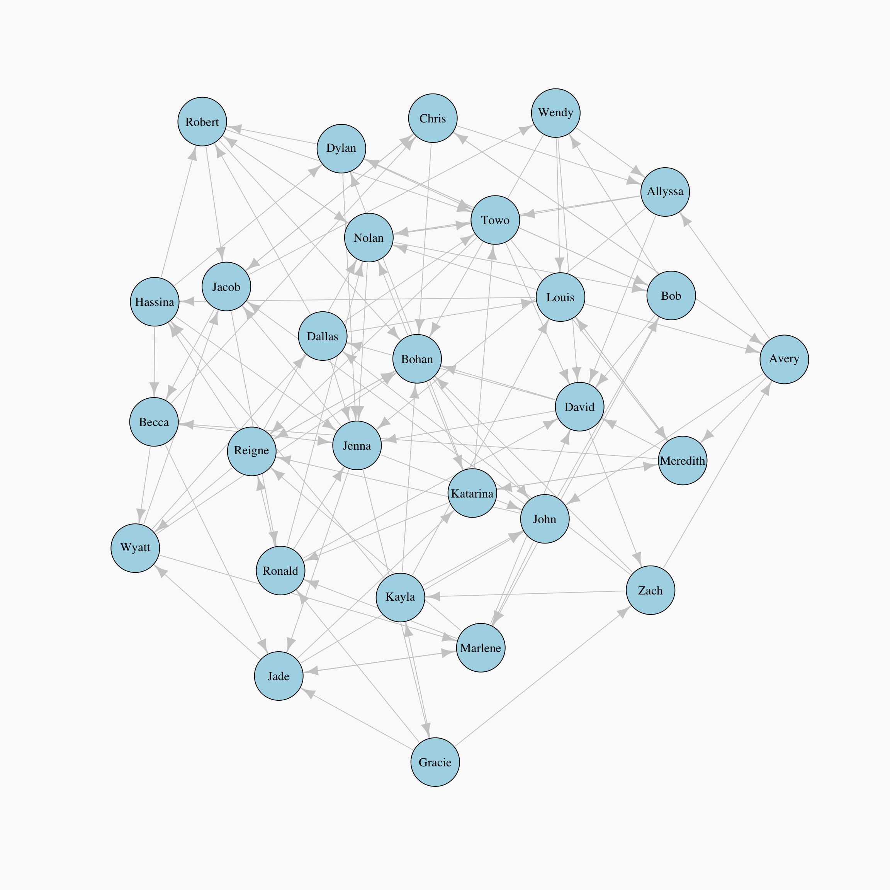
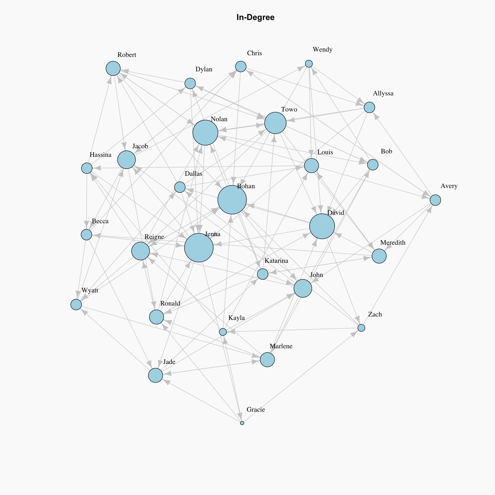
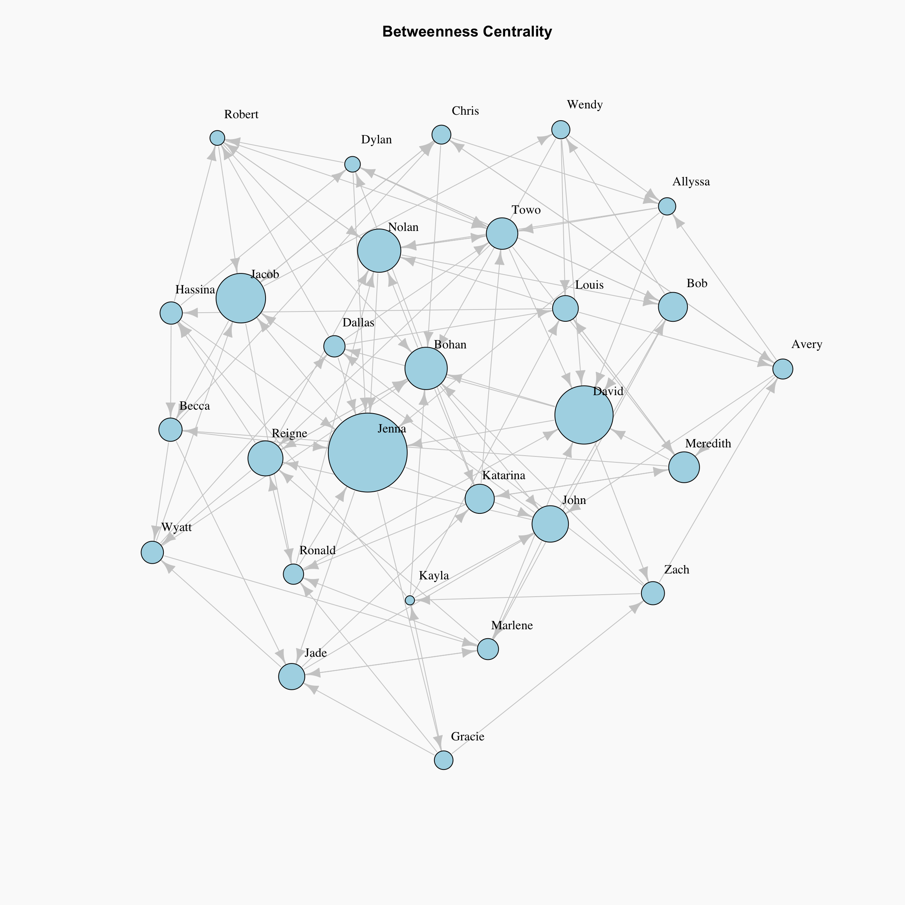
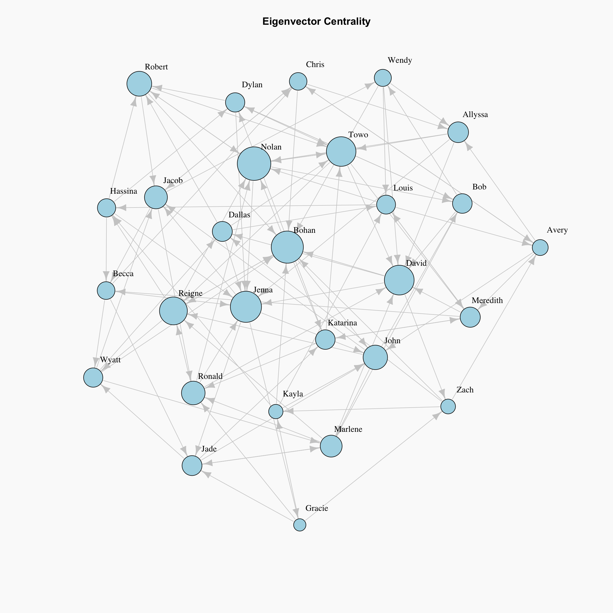
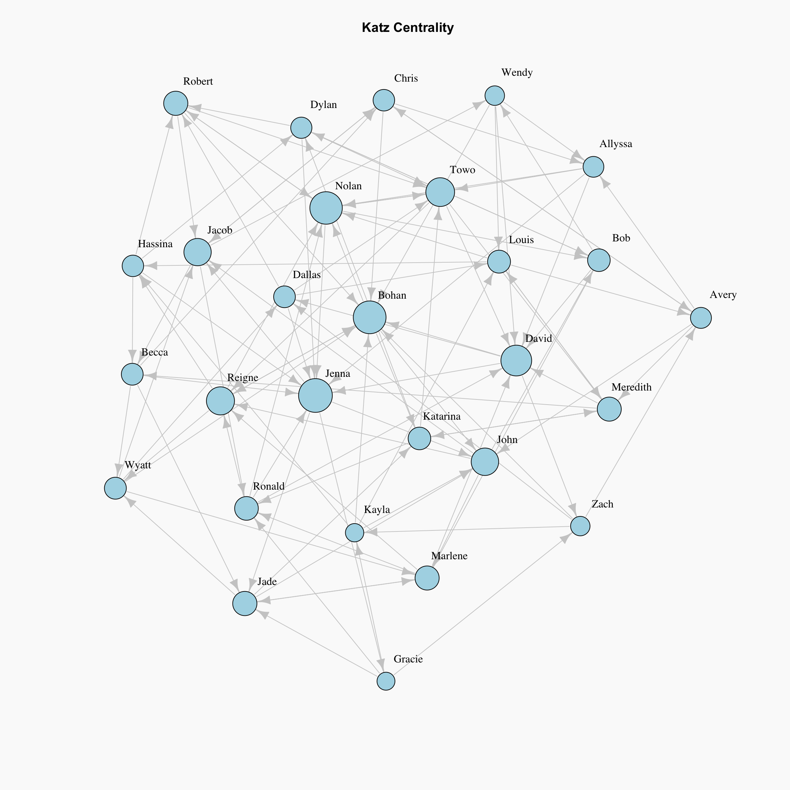
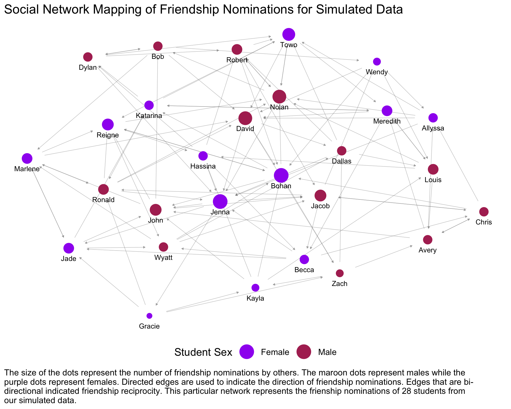

library(tidyverse)Basic Network Analysis and Visualization for Directed Graphs in R
networks
centrality
Choosing the Right Centrality Measure.
Simulate Our Data
For our simulated data we are going to be looking at a classroom that contains 14 male and 14 female students. Suppose that each student was asked to name their top 2 male and top 2 female friends in the class. We are interested in analyzing a slew of different research questions where the centrality of student in the class may be of importance.
Let’s create the data:
We begin with a 4 vectors: all males in the classroom, all females in the classroom, a probability distribution for selecting friends of the same sex, a probability distribution for selecting friends of the opposite sex.
males <- c('Jacob', 'Louis', 'Chris', 'Wyatt', 'Nolan', 'Robert',
'Zach', 'John','Bob', 'David', 'Avery', 'Ronald',
'Dallas', 'Dylan')
females <- c('Bohan', 'Jenna', 'Katarina', 'Hassina', 'Towo',
'Becca', 'Meredith', 'Gracie', 'Kayla', 'Marlene',
'Jade', 'Allyssa', 'Reigne', 'Wendy')
probs.diff.sex = c(0.15,0.15,0.05,0.05,0.1,0.1,0.05,0.1,0.01,0.09,0.05,0.05,0.025,0.025)
probs.same.sex = c(0.15,0.15,0.05,0.05,0.1,0.1,0.05,0.1,0.01,0.09,0.05,0.05,0.05)The function below, simulate.top.friends, will produce a dataframe that will contain each student’s picks for their top 2 male and top 2 female friends in the classroom.
set.seed(1997)
simulate.top.friends <- function(males, females, probs.diff.sex, probs.same.sex) {
dat <- setNames(data.frame(matrix(ncol = 6, nrow = 0)),
c("Ego", "Ego Sex", "MF1", "MF2", "FF1", "FF2"))
for (ego in males) {
temp.males <- males[! males %in% ego]
male.friends.i <- sample.int(13, 2, replace = FALSE, prob = probs.same.sex)
female.friends.i <- sample.int(14, 2, replace = FALSE, prob = probs.diff.sex)
male.friend.1 <- temp.males[male.friends.i[1]]
male.friend.2 <- temp.males[male.friends.i[2]]
female.friend.1 <- females[female.friends.i[1]]
female.friend.2 <- females[female.friends.i[2]]
dat[nrow(dat) + 1,] = c(ego, 'Male', male.friend.1, male.friend.2,
female.friend.1, female.friend.2)
}
for (ego in females) {
temp.females <- females[! females %in% ego]
male.friends.i <- sample.int(14, 2, replace = FALSE, prob = probs.diff.sex)
female.friends.i <- sample.int(13, 2, replace = FALSE, prob = probs.same.sex)
male.friend.1 <- males[male.friends.i[1]]
male.friend.2 <- males[male.friends.i[2]]
female.friend.1 <- temp.females[female.friends.i[1]]
female.friend.2 <- temp.females[female.friends.i[2]]
dat[nrow(dat) + 1,] = c(ego, 'Female', male.friend.1, male.friend.2,
female.friend.1, female.friend.2)
}
return(dat)
}Let’s take a look at our friendship data that we will be working with!
simulate.top.friends(males,females, probs.diff.sex, probs.same.sex)| Ego | Ego Sex | MF1 | MF2 | FF1 | FF2 |
|---|---|---|---|---|---|
| Jacob | Male | Chris | Avery | Katarina | Meredith |
| Louis | Male | Jacob | Avery | Towo | Hassina |
| Chris | Male | Jacob | Robert | Gracie | Becca |
| Wyatt | Male | Nolan | Jacob | Marlene | Jenna |
| Nolan | Male | Jacob | Bob | Bohan | Towo |
| Robert | Male | Nolan | Louis | Jenna | Bohan |
| Zach | Male | Jacob | Avery | Meredith | Towo |
| John | Male | Bob | Louis | Bohan | Wendy |
| Bob | Male | Avery | Jacob | Jenna | Wendy |
| David | Male | Wyatt | Louis | Becca | Jenna |
| Avery | Male | Louis | Jacob | Jenna | Becca |
| Ronald | Male | Jacob | Robert | Becca | Wendy |
| Dallas | Male | Robert | Jacob | Bohan | Jenna |
| Dylan | Male | Jacob | David | Towo | Marlene |
| Bohan | Female | Robert | Nolan | Allyssa | Kayla |
| Jenna | Female | David | Bob | Katarina | Meredith |
| Katarina | Female | David | Nolan | Gracie | Reigne |
| Hassina | Female | Robert | David | Becca | Jade |
| Towo | Female | John | Nolan | Jade | Jenna |
| Becca | Female | Nolan | Dallas | Kayla | Towo |
| Meredith | Female | Louis | Jacob | Towo | Bohan |
| Gracie | Female | Jacob | Ronald | Bohan | Hassina |
| Kayla | Female | Ronald | Louis | Bohan | Gracie |
| Marlene | Female | John | Robert | Hassina | Towo |
| Jade | Female | Ronald | Louis | Hassina | Bohan |
| Allyssa | Female | Avery | Zach | Gracie | Bohan |
| Reigne | Female | John | Zach | Bohan | Hassina |
| Wendy | Female | Nolan | Jacob | Towo | Bohan |
Creating a Graphing Object
There are many available centrality measures that have been developed for network analysis. At this time, there are no packages that are so comprehensive that it includes all of the measures. I will, therefore, limit this discussion to a subset of the measures that are included in igraph.
igraph has a really great function that allows us to turn a dataframe into an igraph object. However, the function requires our data to be in “long” form so we will need to do some reshaping. Let’s restructure our data such that each row represents one directed friend nomination. We are going to call this “Source-Target Form”.
library(reshape)
friendships <- melt(simulate.top.friends(males,females,probs.diff.sex, probs.same.sex),
id=c("Ego", "Ego Sex")) %>%
select(source=Ego, source_sex =`Ego Sex`, target=value) %>%
arrange(source)Let’s look at the first 10 observations so we can understand the format needed to turn this data into an igraph object.
head(friendships, 10)| source | source_sex | target |
|---|---|---|
| Allyssa | Female | David |
| Allyssa | Female | Nolan |
| Allyssa | Female | Jenna |
| Allyssa | Female | Towo |
| Avery | Male | John |
| Avery | Male | Chris |
| Avery | Male | Allyssa |
| Avery | Male | Meredith |
| Becca | Female | Chris |
| Becca | Female | Wyatt |
We will use the graph_from_data_frame function to create the igraph object.
library(igraph)
network <- graph_from_data_frame(friendships[,c('source','target','source_sex')],
directed = TRUE)
networkIGRAPH 006a09e DN-- 28 112 --
+ attr: name (v/c), source_sex (e/c)
+ edges from 006a09e (vertex names):
[1] Allyssa->David Allyssa->Nolan Allyssa->Jenna Allyssa->Towo
[5] Avery ->John Avery ->Chris Avery ->Allyssa Avery ->Meredith
[9] Becca ->Chris Becca ->Wyatt Becca ->Jade Becca ->Jenna
[13] Bob ->Dylan Bob ->David Bob ->Marlene Bob ->Wendy
[17] Bohan ->Nolan Bohan ->John Bohan ->Katarina Bohan ->Reigne
[21] Chris ->Jacob Chris ->Avery Chris ->Bohan Chris ->Allyssa
[25] Dallas ->Louis Dallas ->Robert Dallas ->Jenna Dallas ->Towo
[29] David ->Zach David ->Dallas David ->Bohan David ->Jenna
+ ... omitted several edgesLet’s better understand the information contained in an igraph object:
IGRAPHsimply annotatesnetworkas an igraph object- Whatever random six digit alphanumeric string follows
IGRAPHis simply how igraph identifies the graph for itself, it’s not important for our purposes. - D would tell us that it is directed graph
- N indicates that
networkis a named graph, in that the vertices have a name attribute - – refers to attributes not applicable to
network, but we will see them in the future: - 28 refers to the number of vertices in
network - 112 refers to the number of edges in
network - attr: is a list of attributes within the graph.
- (v/c), which will appear following name, tells us that it is a vertex attribute of a character data type.
- (e/c) or (e/n) referring to edge attributes that are of character or numeric data types
- edges from arbitrary igraph name (vertex names): lists a sample of
network’s edges using the names of the vertices which they connect.
- edges from arbitrary igraph name (vertex names): lists a sample of
Now let’s create a rough plot to look at our network!
lay <- layout_with_kk(network)
par(bg="grey98")
plot(network, layout = lay, edge.color="grey80",
vertex.color="lightblue", vertex.label.color = "black")
For the rest of this post, we are going to talk about a few different measures of centrality, what they capture mathematically and intuitively, and we will look at plots where the size of the node corresponds to the relative centrality score.
Measures of Centrality
Degree Centrality
For directed graphs, in-degree, or number of incoming points, is one way we can determine the importance factor for nodes. The Degree of a node is the number of edges that it has. The basic intuition is that, nodes with more connections are more influential and important in a network. In other words, the people with more friend nominations in our simulated social network are the ones with greater importance according to this metric.
Degree.Directed <- degree(network)
Indegree <- degree(network, mode="in")
Outdegree <- degree(network, mode="out")
CompareDegree <- cbind(Degree.Directed, Indegree, Outdegree)head(CompareDegree, 10)| Degree.Directed | Indegree | Outdegree | |
|---|---|---|---|
| Allyssa | 7 | 3 | 4 |
| Avery | 7 | 3 | 4 |
| Becca | 7 | 3 | 4 |
| Bob | 7 | 3 | 4 |
| Bohan | 12 | 8 | 4 |
| Chris | 7 | 3 | 4 |
| Dallas | 7 | 3 | 4 |
| David | 11 | 7 | 4 |
| Dylan | 7 | 3 | 4 |
| Gracie | 5 | 1 | 4 |
This is a very reasonable way to measure importance within a network. If we are trying to determine who in our classroom is the most popular, we might define that as the greatest number of friendship nominations.
lay <- layout_with_kk(network)
par(bg="grey98")
plot(network, layout = lay, edge.color="grey80",
vertex.size=degree(network, mode="in")*2, # Rescaled by multiplying by 2
main="In-Degree", vertex.label.dist=1.5,
vertex.color="lightblue", vertex.label.color = "black")
Betweenness Centrality
Betweenness Centrality is another centrality that is based on shortest path between nodes. It is determined as number of the shortest path passing by the given node. For starting node \(s\), destination node \(t\) and the input node \(i\) that holds \(s \ne t \ne i\), let \(n_{st}^i\) be 1 if node \(i\) lies on the shortest path between \(s\) and \(t\); and \(0\) if not. So the betweenness centrality is defined as:
\[x_i = \sum_{st} n_{st}^i\] However, there can be more than one shortest path between \(s\) and \(t\) and that will count for centrality measure more than once. Thus, we need to divide the contribution to \(g\_{st}\), total number of shortest paths between \(s\) and \(t\).
\[x_i = \sum_{st} \frac{n_{st}^i}{g_{st}}\]
Essentially the size of the node here represents the frequency with which that node lies on the shortest path between other nodes.
par(bg="grey98")
plot(network, layout=lay,
vertex.label.dist=1.5, vertex.label.color = "black", edge.color="grey80",
vertex.size=betweenness(network)*0.25, # Rescaled by multiplying by 0.25
main="Betweenness Centrality", vertex.color="lightblue")
Eigenvector Centrality
Eigenvector centrality is a basic extension of degree centrality, which defines centrality of a node as proportional to its neighbors’ importance. When we sum up all connections of a node, not all neighbors are equally important. This is a very interesting way to measure popularity in our classroom where we say the popularity of your friends matters more than the number of friends. Let’s consider two nodes in a friend network with same degree, the one who is connected to more central nodes should be more central.
First, we define an initial guess for the centrality of nodes in a graph as \(x_i=1\). Now we are going to iterate for the new centrality value \(x_i'\) for node \(i\) as following:
\[x_i' = \sum_{j} A_{ij}x_j\]
Here \(A_{ij}\) is an element of the adjacency matrix, where it gives 1 or 0 for whether an edge exists between nodes \(i\) and \(j\). it can also be written in matrix notation as \(\mathbf{x'} = \mathbf{Ax}\).
We iterate over t steps to find the vector \(\mathbf{x}(t)\) as:
\[\mathbf{x}(t) = \mathbf{A^t x}(0)\]
par(bg="grey98")
plot(network, layout=lay,
vertex.label.dist=1.5, vertex.label.color = "black", edge.color="grey80",
vertex.size=evcent(network)$vector*15, # Rescaled by multiplying by 15
main="Eigenvector Centrality", vertex.color="lightblue")
The plot shows, the students which have the same number of friend nominations are not necessarily in the same size. The one that is connected to more central, or “popular” nodes are larger in this visualization.
However, as we can see from the definition, this can be a problematic measure for directed graphs. Let’s say that a student who received no friend nominations themselves nominates another student as a friend. Because that person has 0 friend nominations themselves, they would not contribute any importance to the person they nominated. In other words, eigenvector centrality would not take zero in-degree nodes into account in directed graphs.
However there is a solution to this!
Katz Centrality
Katz centrality introduces two positive constants \(\alpha\) and \(\beta\) to tackle the problem of eigenvector centrality with zero in-degree nodes:
\[x_i = \alpha \sum_{j} A_{ij} x_j + \beta\],
again \(A_{ij}\) is an element of the adjacency matrix, and it can also be written in matrix notation as \(\mathbf{x} = \alpha \mathbf{Ax} + \beta \mathbf{1}\). This \(\beta\) constant gives a free centrality contribution for all nodes even though they don’t get any contribution from other nodes. The existence of a node alone would provide it some importance. \(\alpha\) constant determines the balances between the contribution from other nodes and the free constant.
Unfortunately, igraph does not have a function to compute Katz centrality, so we will need to do it the old fashioned way.
katz.centrality = function(g, alpha, beta, t) {
n = vcount(g);
A = get.adjacency(g);
x0 = rep(0, n);
x1 = rep(1/n, n);
eps = 1/10^t;
iter = 0;
while (sum(abs(x0 - x1)) > eps) {
x0 = x1;
x1 = as.vector(alpha * x1 %*% A) + beta;
iter = iter + 1;
}
return(list(aid = x0, vector = x1, iter = iter))
}par(bg="grey98")
plot(network, layout=lay,
vertex.label.dist=1.5, vertex.label.color = "black", edge.color="grey80",
vertex.size=katz.centrality(network, 0.1, 1, 0.01)$vector*5, # Rescaled by multiplying by 15
main="Katz Centrality", vertex.color="lightblue")
Although this method is introduced as a solution for directed graphs, it can be useful for some applications of undirected graphs as well.
Other Packages that I Like for Visualization
I want to conclude this post with some sample code to produce a nice network plot using the ggnetwork package. igraph is only one package that exists for network visualization and centrality calculations, I encourage you to check out additional packages which may be stronger than igraph for some purposes.
library(GGally)
library(network)
library(ggnetwork)
net <- list(nodes=friendships[c('source', 'target', 'source_sex')],
edges=friendships[c('source', 'target', 'source_sex')])
# create node attribute data
net.cet <- as.character(net$nodes$source_sex)
names(net.cet) = net$nodes$source
edges <- net$edges
# create network
net.net <- edges[, c("source", "target") ]
net.net <- network::network(net.net, directed = TRUE)
# create sourc sex node attribute
net.net %v% "source_sex" <- net.cet[ network.vertex.names(net.net) ]set.seed(1)
ggnet2(net.net, color = "source_sex",
palette = c("Female" = "purple", "Male" = "maroon"), size = 'indegree',
arrow.size = 3, arrow.gap = 0.04, alpha = 1, label = TRUE, vjust = 2.5, label.size = 3.5,
edge.alpha = 0.5, mode = "kamadakawai",edge.color = 'grey50',
color.legend = "Student Sex") + theme_bw() + theme_blank() +
theme(legend.position = "bottom", text = element_text(size = 15),
plot.caption = element_text(hjust = 0)) + guides(size=F) +
labs(title='Social Network Mapping of Friendship Nominations for Simulated Data',
caption = str_wrap("The size of the dots represent the number of
friendship nominations by others. The maroon dots represent males
while the purple dots represent females. Directed edges are used
to indicate the direction of friendship nominations.
Edges that are bi-directional indicated friendship reciprocity.
\n\n This particular network represents the frienship nominations
of 28 students from our simulated data.", 128))
Thank you!
Jacob
Social Network Analysis?
“There is certainly no unanimity on exactly what centrality is or on its conceptual foundations, and there is little agreement on the proper procedure for its measurement.” - Linton Freeman (1977)
Social network analysis can be used to measure the importance of a person as a function of the social structure of a community or organization. This post uses visualization as a tool to explain how different measures of centrality may be used to analyze different questions in a network analysis. In these examples we will be specifically looking at directed graphs to compare the following centrality measures and their use-cases:
An example of a directed graph would be one in which people nominate their top 2 friends. In this graph, nodes (people) would connect to others nodes through directed edges (nominations). It is possible for Jacob to nominate Jenna without Jenna nominating him back. You can imagine why centrality in a friendship network might take into account the direction of these nominations. If I list 100 people as my friends and none of them list me back, do we think I am a popular person?